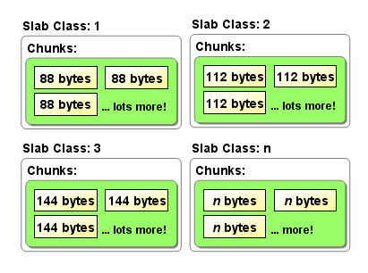
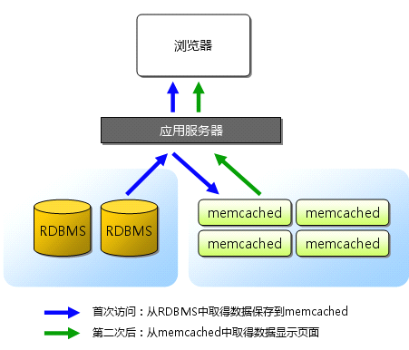

Index
- DNS基本概念
- Master: 正向区/反向区
- Slave: 正向区/反向区
- DNS区域传输限制
- 根提示区、Forward
- Client使用DNS解析
- 扩展： 子域授权
- 扩展： DNS Round Robin
- Puppet简介
- Puppet部署
- 实例：File资源
- 实例：创建模块test1
- 实例：创建模块httpd
- Puppet命名规范
- Puppet资源
- 资源的依赖关系
- notify subscribe
- Puppet部署Nginx
- Puppet部署MySQL
- Master自动签发证书
- Puppet Dashboard
- Puppet Git
- Puppet Cobbler
memcache简介与工作原理
一、Memcache概述Memcache(内存，缓存) ： 是一个高性能的、分布式的内存对象缓存系统。
通过在内存里维护一个巨大的hash表。（key=value）
key：最大255字节
value：最小48字节，最大1M内容
Hash表
| Key | value |
|---|---|
| mystr | “abc” |
| myarr | Array(“aa”, “cc”); |
| object | Object值 |
它就是一个软件（服务软件） c/s软件
如： Mysql 129.12.121.11 3306
如：Apache www.baidu.com 80
memcache 维护内存，是将数据在内存中使用， 减少I/O，提高效率。它150多k，并且开源
129.121.11.111 11211
二、Memcache的工作原理
Memcache 是一个软件， memcached是一个守护进程
就像：http httpd； vsftp vsftpd
memcache它就是一个c/s软件
memcached是以守护程序方式运行于一个或多个服务器中，随时会接收客户端的连接和操作。
客户端(client)使用各种语言去编写 PHP/java/c/c++/perl/python/ruby等
数据是存储在内存中，当然内存是临时存储的。
可以有多台memcache协同工作，但每台memcache只管理自己的数据，相互不能同步。
默认的分布式算法是rr
memcache本身就是用C语言编写的，采用了单进程单线程的异步I/0工作方式，基于事件工作；当memcache一旦启动，服务器就处于工作可用状态。
所以在安装memcache之前必需先安装libevent
基于libevent的事件处理
libevent是一套跨平台的事件处理接口的封装，能够兼容包括这些操作系统： Windows/Linux/BSD/Solaris 等操作系统的的事件处理。
包装的接口包括：poll、select(Windows)、epoll(Linux)、kqueue(BSD)、/dev/pool(Solaris)
Memcached 使用libevent来进行网络并发连接的处理，能够保持在很大并发情况下，仍旧能够保持快速的响应能力。
libevent: http://www.monkey.org/~provos/libevent/
lazy:懒惰模型的(只要缓存有空间，即使Key已经过期，memcached也不会清空)
LRU:最近最少使用的机制。(如果缓存空间过小，需要存储的数据量较大，就会造成命中较小)
它不会永久存储，只是把数据存储到内存中。如果memcached坏掉，它会影响业务，但不影响数据。
内存存储数据时都是按字节序列化的，也就是说一个字节一个字节的存储，每一个字节都是一个编制的单元。但进程在使用空间时是以页面为单位的，默认4K。如果要存储一个10K和34K的数据，如何存储呢？存储单元的存储边界是如何管理呢？不停的内存申请、释放，会造成内存的碎片较多；如果碎片较多，它的效率就会下降。由两种机制来解决内存碎片问题：slab Allocator与buddy system。这两种机制是
buddy system(伙伴系统)：避免了页面之间碎片的产生(避免内存外碎片，即页面外的碎片)。它是实现 当整个内存中以页面的方式进行管理时，有连续大的内存空间可用。例如：如果要存储一个1M的数据，它需要申请n多个页面(每个页面默认4K)，页面之间是有缝隙(碎片)的。buddy system就是为了把这些邻近连续的页面空间，创建成一个大的空间；当用户申请时，可以从起始位置(而不是中间)申请空间，避免了页面之间的碎片产生。
slab allocator：
某些数据很小，它根本占不到一个页面，在这种情况下，如果分配给它一个页面的空间就浪费了内存。slab allocator的出现就是为了解决这些小于页面单位的、非常小的内存申请及管理；它负责专门分配好小内存数据结构，然后等待应用程序的申请，并分配结构单元。当应用使用完毕后，slab allocator不会消除/回收这些数据结构，这些结构可以随时重复利用。
slab allocator将分配好的数据结构分成：已用的和空闲的。当一个已用的数据结构不再使用时，就将它标识为空闲的，请待下一个请求。
slab allocator的基本原理是按照预先规定的大小，将分配的内存分割成特定长度的块，以完全解决内存碎片问题。将分配的内存分割成各种尺寸的块（chunk），并把尺寸相同的块分成组（chunk的集合）
Slab Allocation的主要术语
Page：分配给Slab的内存空间，默认是1MB。分配给Slab之后根据slab的大小切分成chunk。
Chunk：用于缓存记录的内存空间。
Slab Class：特定大小的chunk的组。

多台memcached的调度算法：
cache算法：
分布式算法：
key值%memcached服务器的总数(即将键值取校验码，然后除以服务器总数，取余数)。
如果服务器的总数发生变化，会导致结果变化，最终导致在指定服务器上找不到相应的缓存数据。以前的缓存都会失效，需要重新缓存。
一致性hash
三、为什么要在WEB中使用Memcache

memcache主要是用在“有rs返回值”的场景(select)，其它情况一般不使用(update、delete、insert)。
将相关的sql进行hash(一般用md5)，得到一个hash key(键)
四、memcached的安装
基于libevent事件
Linux下
安装libevent
tar xfz libevent-2.0.20-stable.tar.gz
cd libevent-2.0.20-stable
./configure
make && make install
(默认安装在/usr/local/lib/目录中)
安装memcached
./configure --prefix=/usr/local/memcached --with-libevent=/usr/local/lib
make && make install
如果提示找不到libevent-2.0.so.5，用以下方法解决：
cat >> /etc/profile <<end
export LD_LIBRARY_PATH=/usr/local/lib:$LD_LIBRARY_PATH
end
source /etc/profile
启动/usr/local/memcached/bin/memcached -d -m 128 -p 11211 -u root -vvv
停止: kill `cat /tmp/memcached.pid`;
Killall memcached
Windows 下的安装：
Memcahced.exe -d install [uninstall]
Memcached.exe -d -m 50 -l 127.0.0.1 -p 11211 start
五、Memcached服务器的管理（启动）
memcached的基本设置：
-p 监听的端口
-l 连接的IP地址, 默认是本机
-d start 启动memcached服务
-d restart 重起memcached服务
-d stop|shutdown 关闭正在运行的memcached服务
-d install 安装memcached服务
-d uninstall 卸载memcached服务
-u 以的身份运行 (仅在以root运行的时候有效)
-m 最大内存使用，单位MB。默认64MB ，最大好像2G
-M 内存耗尽时返回错误，而不是删除项
-c 最大同时连接数，默认是1024
-f 块大小增长因子，默认是1.25
-n 最小分配空间，key+value+flags默认是48
-h 显示帮助
六、memcached的基本使用：
telnet localhost 11211
| 点击这里 | 点击这里 | 点击这里 |
|---|---|---|
| Command | Description | Example |
| get | Reads a value | get mykey |
| set | Set a key unconditionally | set mykey 0 60 5 |
| add | Add a new key | add newkey 0 60 5 |
| replace | Overwrite existing key | replace key 0 60 5 |
| append | Append data to existing key | append key 0 60 15 |
| prepend | Prepend data to existing key | prepend key 0 60 15 |
| incr | Increments numerical key value by given number | incr mykey 2 |
| decr | Decrements numerical key value by given number | decr mykey 5 |
| delete | Deletes an existing key | delete mykey |
| flush_all | Invalidate specific items immediately | flush_all |
| Invalidate all items in n seconds | flush_all 900 | |
| stats | Prints general statistics | stats |
| Prints memory statistics | stats slabs | |
| Prints memory statistics | stats malloc | |
| Print higher level allocation statistics | stats items | |
| stats detail | ||
| stats sizes | ||
| Resets statistics | stats reset | |
| version | Prints server version. | version |
| verbosity | Increases log level | verbosity |
| quit | Terminate telnet session | quit |
| 点击这里 | 点击这里 |
|---|---|
| pid | memcache服务器的进程ID |
| uptime | 服务器已经运行的秒数 |
| time | 服务器当前的unix时间戳 |
| version | memcache版本 |
| pointer_size | 当前操作系统的指针大小（32位系统一般是32bit） |
| rusage_user | 进程的累计用户时间 |
| rusage_system | 进程的累计系统时间 |
| curr_items | 服务器当前存储的items数量 |
| total_items | 从服务器启动以后存储的items总数量 |
| bytes | 当前服务器存储items占用的字节数 |
| curr_connections | 当前打开着的连接数 |
| total_connections | 从服务器启动以后曾经打开过的连接数 |
| connection_structures | 服务器分配的连接构造数 |
| cmd_get | get命令（获取）总请求次数 |
| cmd_set | set命令（保存）总请求次数 |
| get_hits | 总命中次数 |
| get_misses | 总未命中次数 |
| evictions | 为获取空闲内存而删除的items数（分配给memcache的空间用满后需要删除旧的items来得到空间分配给新的items） |
| bytes_read | 总读取字节数（请求字节数） |
| bytes_written | 总发送字节数（结果字节数） |
| limit_maxbytes | 分配给memcache的内存大小（字节） |
| threads | 当前线程数 |